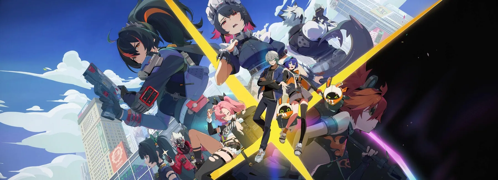

06 / WALLPAPER COLLECTION
ART FOR
EVERY SCREEN.
Six selected panoramic illustrations, presented in a clean gallery for browsing and personal download.
FRAMEVERSE CULTURE NETWORK / 2026SCROLL TO EXPLORE ↓
WALL / 01 · CINEMATICAFTER THE STATIC
DOWNLOAD ↓
WALL / 02 · KEY ARTWELCOME TO NEW ERIDU
DOWNLOAD ↓
WALL / 03 · KEY ARTTHE CITY IN MOTION
DOWNLOAD ↓
WALL / 04 · SPECTRUMA DIFFERENT SIDE OF THE CITY
DOWNLOAD ↓
WALL / 05 · KEY ARTCOLOUR IN THE NOISE
DOWNLOAD ↓
WALL / 06 · CITY LIGHTSBEYOND THE HORIZON
DOWNLOAD ↓
Downloaded files are optimized WebP versions for personal viewing. The source images are copyrighted works of their respective rights holders; no commercial license is conveyed.